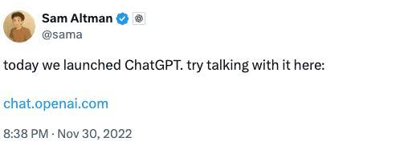
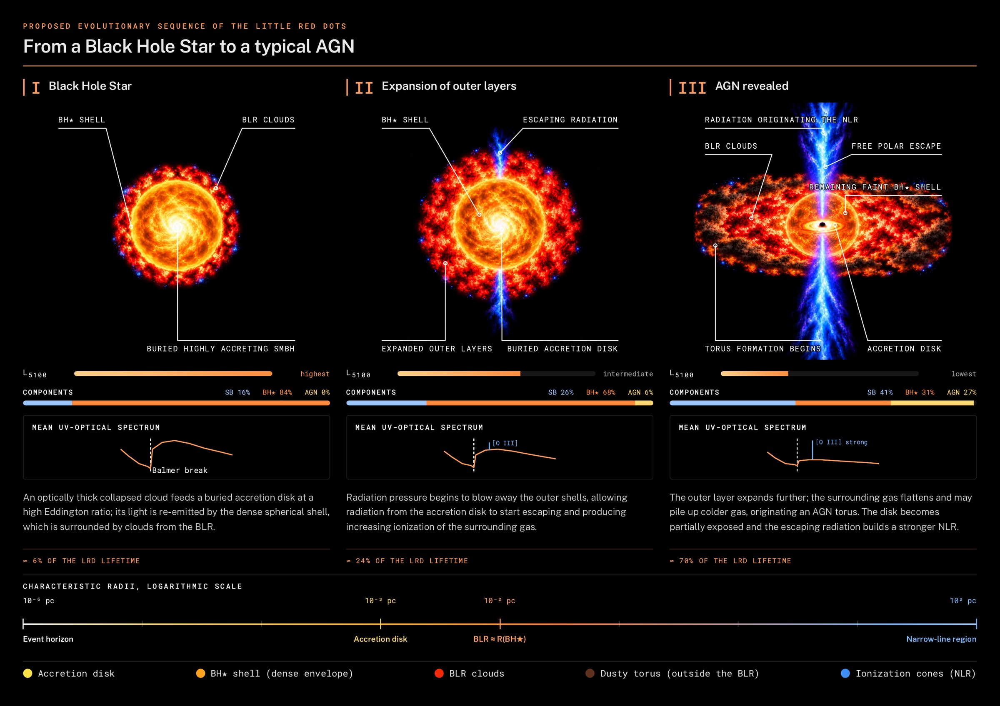

“i am a stochastic parrot, and so r u”
Already philosophical on day four.“AI smarter than any one human… probably around the end of next year.”
Every year is “next year”. ⏳An AI-produced proof that an initially smooth flow develops a singularity in finite time, checked line by line in Lean.
Still being checked by mathematicians, with a public credit dispute (Buckmaster at NYU and Alpöge at Anthropic were working on it in parallel). Clay hasn’t paid out yet.
Trained once on a snapshot of the internet. Everything it “knows” is squeezed into its weights. It can’t look anything up.
So when you ask, it just predicts the next word:
“Little Red Dots are ___”
JWST found them in 2023. A 2021 model has never heard of them, but it answers anyway.
An open-book exam 📖. Fetch the relevant text first, then answer from it.
Same model. Better context. Better answer.
RAG doesn’t make it smarter, only better informed.
Every connection in the network is a number. Training means nudging all of them, again and again, until the next word comes out right.
Knowledge isn’t stored like files. It’s spread across the knobs.
The frontier labs don’t publish their sizes any more (probably trillions). Just holding GPT-3’s weights takes ~350 GB.
“The more you buy, the more you save.”
Said by the man who sells the GPUs.Everything it can “see” at once: your prompt, the files, the conversation. Measured in tokens (1 token ≈ ¾ of a word).
Big memory ≠ perfect attention. Details in the middle get missed (“lost in the middle”).
Same as me in a three-hour meeting. 😴
Agent = model + tools + a loop. It runs code, reads the error, fixes it, and runs it again, until the job is done.
“In three to six months, AI will be writing 90% of the code.”
In my repo, at least: guilty. 🙋(Unless you’re solving Navier–Stokes and have 10,000 agents and a few million dollars to spare. 😄)
paints pixels: images, artwork, textures
draws with code: vector graphics, layouts, diagrams, long documents, software
video, search, and everything inside Google
Claude doesn’t generate images. That isn’t what it’s built for.

your prompt and the context you hand it. Nothing in your head.
the most plausible answer, not the true one.
with the most average guess. Vague in, generic out.
AI is a very fast, very eager intern.
You still have to be the scientist.
Do the research first: what physics, which method, which tools, what it should look like. Then hand it over.
One month isn’t enough to understand N-body simulations. It’s plenty for outreach, if you know exactly what you want.
“It is our job to create computing technology such that nobody has to program.”